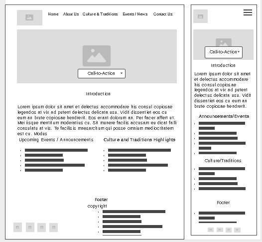
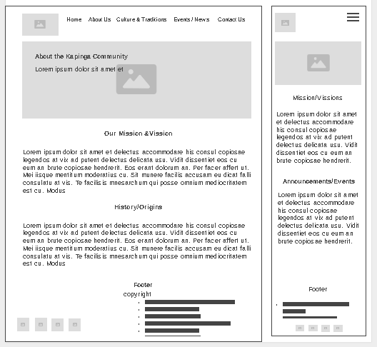
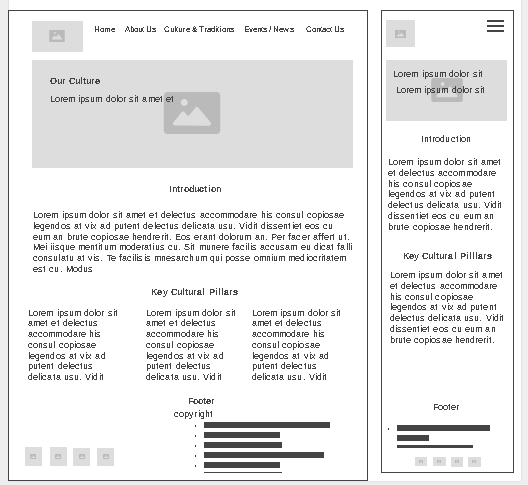

This name represents the name of this website and the people of kapinga community.
This site provides a hub for the Kapinga community and the visitors to explores things that happening in the community. It give a little directions of who the people are, what traditions they still carry and many more.
Primary color will be used for main site headings, header backgrounds, primary buttons, and the dominant brand tone.
The secondary color will be used for subheadings, navigation hover states, and accent highlights for community and nature elements.
The accent color will be used if there is a call-to-action highlights. It can be also used for badge backgrounds, and secondary focus borders.
Headings (h1,h2,h3) - Poppins
Body Content (p,lists,forms) - inter or roboto


